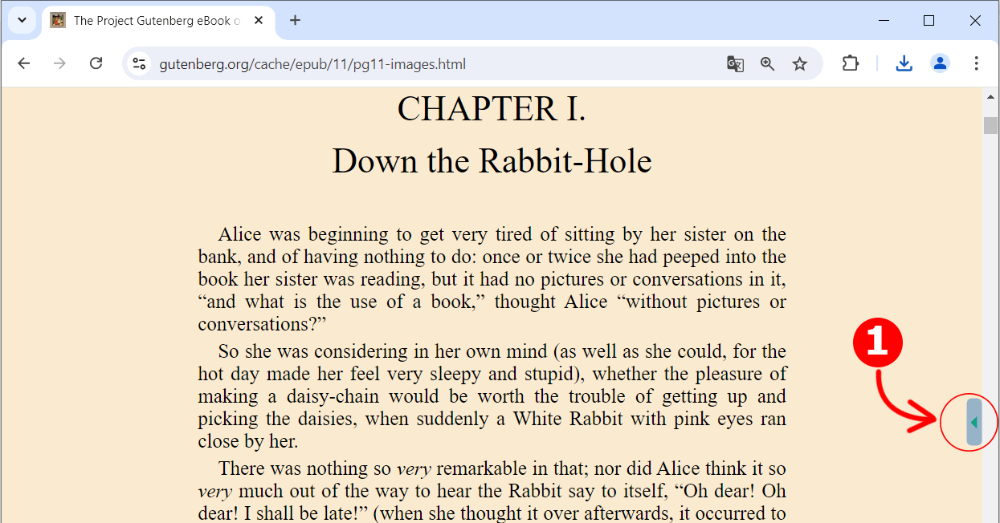

Pronounce Words
⚠️ This extension pronounces English text only.
Hear the pronunciation of any English word or phrase on any website — instantly.
Activate the floating button on the edge of your browser to start.

👉 Try it now: activate the button and double-click any English word (for example, entrepreneur) to hear its pronunciation.
You can turn this off anytime.
Two modes — you are always in control
Active mode
When active, pronunciation happens automatically — just highlight any text or double-click a word.
This mode is designed for fast learning and immersion.
Inactive mode
When inactive, nothing happens automatically.
You can still hear pronunciation manually: select text, right-click, and choose “Pronounce selected”.
You can deactivate the app anytime by clicking the cross on the button .
The floating button can be moved vertically along the left or right edge of the browser to any position you like.
Click the floating button to open the main application window, where you can explore additional options.
Alternatively, you can open it anytime from the extensions menu in the top-right corner of your browser.